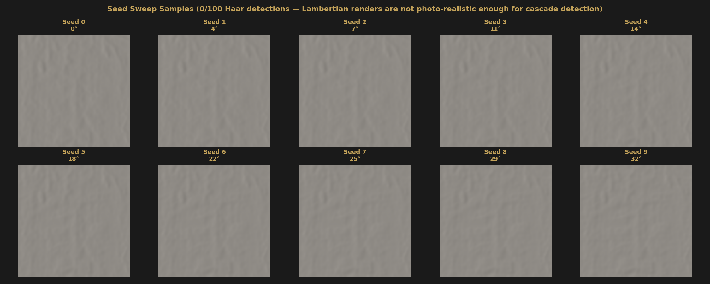
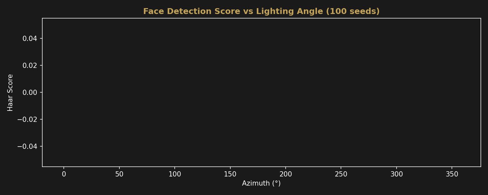

Negative Result
Seed Sweep — Miller FFT-Filtered Depth
Lambertian clay renders across 100 lighting angles tested against Haar cascade face detection. Result: 0 detections. This is a negative result that informs future methodology.
Method
The Miller 300×300 depth map was rendered as a Lambertian-shaded gray clay surface
(RGB 180, 175, 168; ambient 0.3, diffuse 0.7) at 100 lighting angles spanning 0–360°
azimuth at a fixed 45° elevation. Each render was passed to OpenCV’s Haar cascade
face detector (haarcascade_frontalface_default.xml, scale factor 1.05,
min neighbors 3, min size 50×50).
Result
| Metric | Value |
|---|---|
| Seeds tested | 100 |
| Total Haar detections | 0 |
| Detection rate | 0.0% |
| Mean score | 0.0 |
This is a negative result
Zero out of 100 renders produced a Haar cascade face detection. The Haar classifier failed uniformly across all lighting angles. This does not mean the depth map lacks facial information — it means Haar cascade detection is not an appropriate scoring metric for this type of render.
Why Haar Cascade Fails Here
Haar cascade classifiers are trained on photographic images with specific contrast patterns: dark eye sockets against lighter cheeks, shadow under the nose, etc. A Lambertian clay render of a depth map lacks these features:
- No texture: Clay renders produce smooth, uniform surfaces without the skin texture, shadows, and specular highlights that Haar features rely on.
- No color contrast: The monochromatic clay material produces gentle shading gradients, not the high-contrast edge patterns Haar cascades detect.
- Depth vs. appearance: The depth map encodes geometry, but Haar cascades are trained on appearance. These are fundamentally different domains.
Render Samples


Recommended Alternative Approaches
For future work on automated scoring of depth-constrained reconstructions, we recommend exploring:
- SSIM against depth map input: Structural Similarity Index between the rendered image and the input depth map, measuring how faithfully the render preserves the geometric information.
- Facial landmark detection on renders: Modern deep-learning-based landmark detectors (e.g. MediaPipe Face Mesh, dlib) are more robust to material and lighting variations than Haar cascades.
- Manual expert review: For a dataset of this size (100–200 renders), structured human evaluation with defined criteria may be more reliable than automated metrics not designed for this domain.
- Perceptual similarity metrics: LPIPS or other learned perceptual metrics trained on diverse image types may generalize better to sculptural renders.